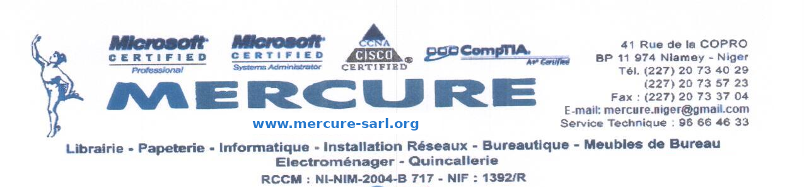
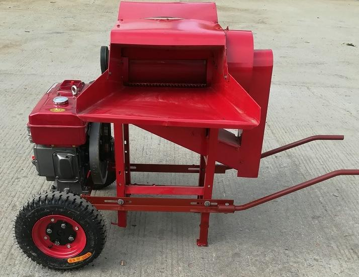
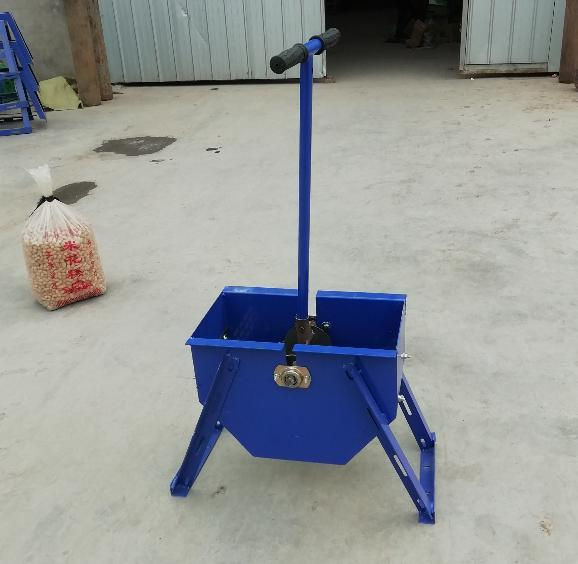
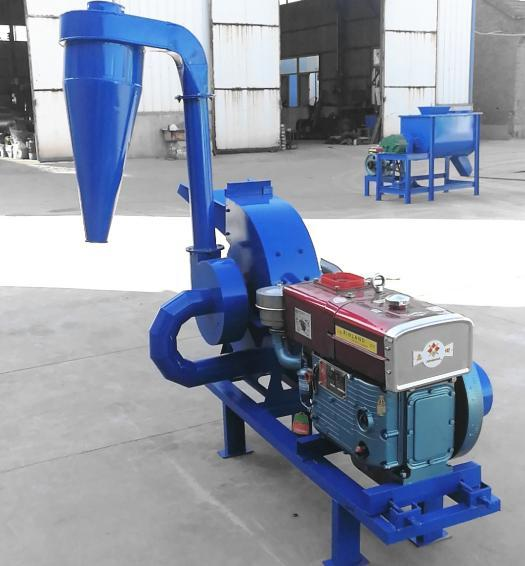
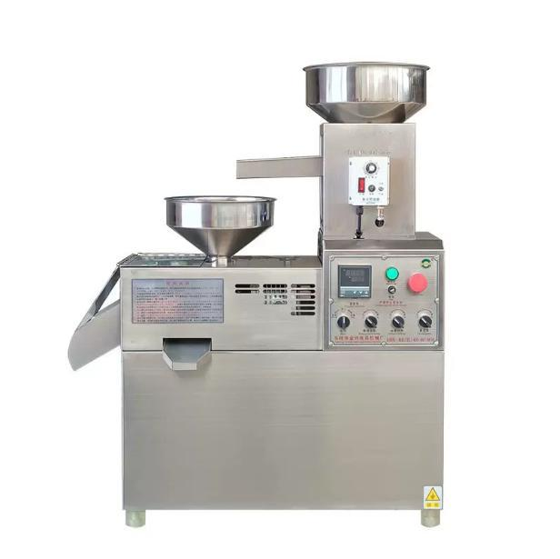

| Motorisation | Moteur diesel 6 CV, démarrage manuel | Rendement | 400 à 600 kg/h |
| Efficacité | Battage ≥ 97 % — taux de brisure ≤ 2 % | Poids | 120 kg |
| Dimensions | 1,20 × 0,80 × 1,10 m — sur roues | Livré avec | Moteur, roues, 2 grilles |

| Fonctionnement | Manuel — aucun carburant, aucune électricité | Rendement | 40 à 80 kg/h |
| Dimensions | 0,68 × 0,35 × 1,15 m | Poids | 25 kg |
| Usage | Groupements féminins, coopératives, petits transformateurs — entretien quasi nul | ||

| Motorisation | Moteur diesel 10 CV | Rendement | 200 à 400 kg/h |
| Produits | Mil, maïs, sorgho, riz, blé — broyage ; tiges de maïs, paille, herbe — hachage | ||
| Dimensions | 0,65 × 0,60 × 1,30 m | Poids | 260 kg |

| Motorisation | Électrique 4 kW | Rendement | 10 à 30 kg/h |
| Construction | Toutes pièces en inox SS201 — contact alimentaire | Poids | 60 kg |
| Dimensions | 0,82 × 0,45 × 1,00 m | Livré avec | Machine + moteur électrique |